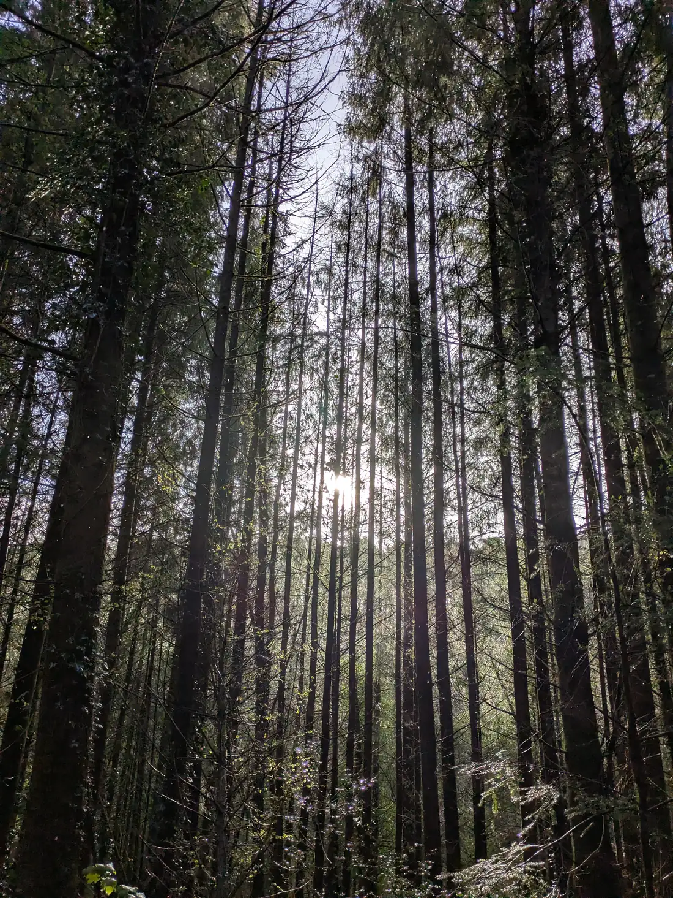

Stop 02 - cairdecorrin.ie/s/2
Closed canopy.

Even-aged conifer, planted close together. The lower trunks are bare and the floor is bare needle litter. This is a working crop, and it is doing the job it was planted for.
The nearest channel is twenty-three metres away.
The name of this glen
An account written down at Adair school in the 1930s explains how Glenabo got its name. It names the glen, not this particular spot.